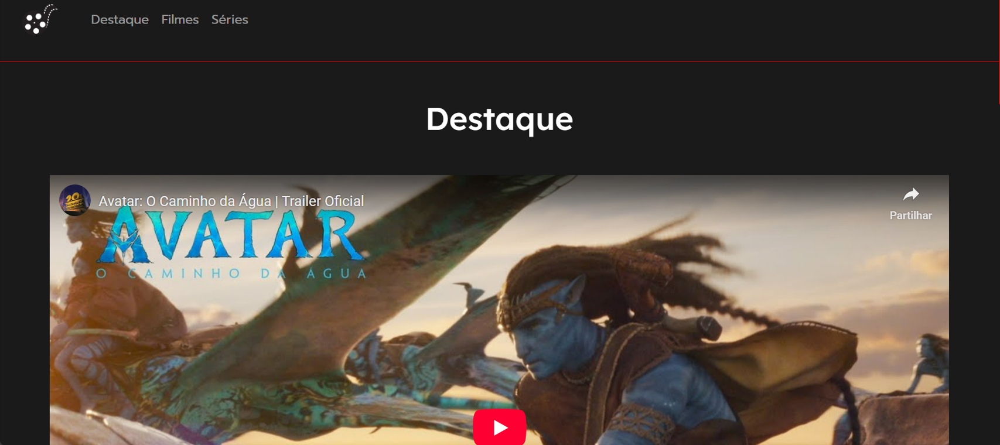
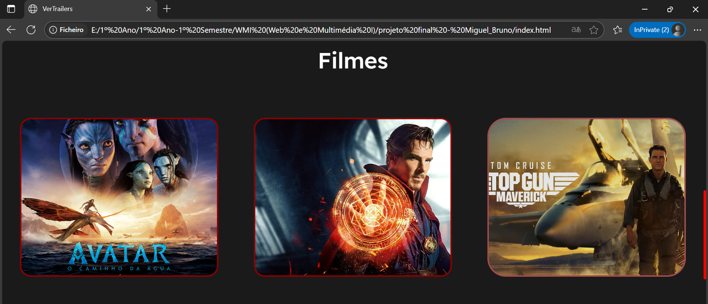
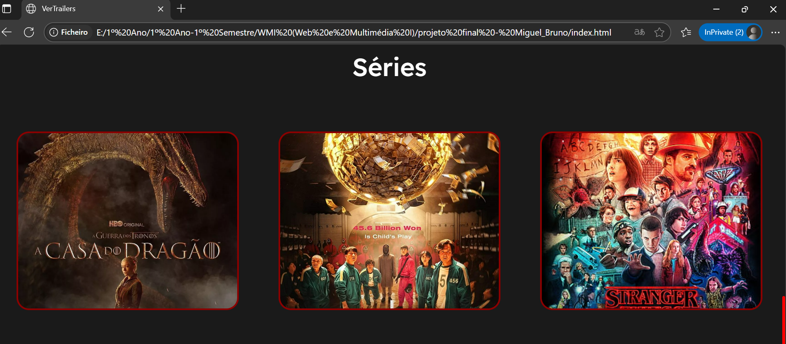

Nesta unidade curricular, o principal objetivo foi aplicar os conceitos fundamentais de desenvolvimento web na criação de um website funcional a partir do zero. Em colaboração com um colega, desenvolvemos um site dedicado a filmes e séries, onde os utilizadores podem consultar informações sobre os filmes e séries favoritos.

O desenvolvimento do projeto seguiu uma abordagem estruturada. Inicialmente, pesquisámos e definimos a estrutura do site, decidindo as secções principais (página inicial, listagem, detalhes, etc.) e desenhando os primeiros wireframes para visualizar o layout. De seguida, passámos à fase de codificação, traduzindo os designs para HTML e CSS, sempre com foco em criar um código limpo e organizado.
Sendo um projeto de grupo, a comunicação e a colaboração foram essenciais. Utilizamos ferramentas como o Git e o GitHub para gerir as versões do código, o que permitiu que ambos trabalhássemos em simultâneo em diferentes partes do site de forma organizada e sem conflitos.

O resultado foi um website estático, visualmente coerente e funcional, que cumpriu todos os objetivos propostos. Este projeto foi fundamental para solidificar os conhecimentos em HTML e CSS e para compreender a importância do trabalho em equipa na gestão de um projeto web.